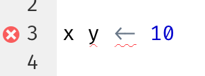

6 Ροή εργασιών: αρχεία κώδικα και projects
Αυτό το κεφάλαιο θα εισάγει δύο βασικά εργαλεία για την οργάνωση του κώδικά σας: τα αρχεία κώδικα και τα projects.
6.1 Αρχεία κώδικα
Μέχρι στιγμής, για να εκτελείτε κώδικα χρησιμοποιείτε την κονσόλα. Αυτό είναι ένα εξαιρετικό μέρος για να ξεκινήσετε, αλλά θα διαπιστώσετε ότι η κονσόλα γεμίζει με κώδικα αρκετά γρήγορα καθώς δημιουργείτε πιο περίπλοκα γραφικά ggplot2 και μεγαλύτερες ροές dplyr. Για να δώσετε στον εαυτό σας περισσότερο χώρο για να δουλέψει, χρησιμοποιήστε το πρόγραμμα επεξεργασίας αρχείων κώδικα. Ανοίξτε το κάνοντας κλικ στο μενού Αρχεία (File), επιλέγοντας Νέο αρχείο (New File) και μετά R script (αρχείο κώδικα R) ή χρησιμοποιώντας τη συντόμευση πληκτρολογίου Cmd/Ctrl + Shift + N. Τώρα θα δείτε τέσσερα παράθυρα, όπως στο Σχήμα 6.1. Το πρόγραμμα επεξεργασίας αρχείων κώδικα είναι ένα εξαιρετικό μέρος για να πειραματιστείτε με τον κώδικά σας. Όταν θέλετε να αλλάξετε κάτι, δεν χρειάζεται να πληκτρολογήσετε ξανά τα πάντα, μπορείτε απλώς να επεξεργαστείτε το αρχείο και να το εκτελέσετε ξανά. Και αφού έχετε γράψει κώδικα που λειτουργεί και κάνει αυτό που θέλετε, μπορείτε να τον αποθηκεύσετε ως αρχείο κώδικα για να επιστρέψετε εύκολα αργότερα.
6.1.1 Εκτελώντας κώδικα
Το πρόγραμμα επεξεργασίας αρχείων κώδικα είναι ένα εξαιρετικό μέρος για τη δημιουργία πολύπλοκων διαγραμμάτων ggplot2 ή μεγάλων ροών χειρισμών δεδομένων με συναρτήσεις της dplyr. Το κλειδί για την αποτελεσματική χρήση του προγράμματος επεξεργασίας αρχείων κώδικα είναι να απομνημονεύσετε μία από τις πιο σημαντικές συντομεύσεις πληκτρολογίου: Cmd/Ctrl + Enter. Αυτό εκτελεί την τρέχουσα έκφραση R στην κονσόλα. Για παράδειγμα, πάρτε τον παρακάτω κώδικα.
library(dplyr)
library(nycflights13)
not_cancelled <- flights |>
filter(!is.na(dep_delay)█, !is.na(arr_delay))
not_cancelled |>
group_by(year, month, day) |>
summarize(mean = mean(dep_delay))Εάν ο κέρσορας σας βρίσκεται στο █, πατώντας Cmd/Ctrl + Enter θα εκτελεστεί η πλήρης εντολή που δημιουργεί το not_cancelled. Θα μετακινήσει επίσης τον κέρσορα στην ακόλουθη δήλωση (που ξεκινά με not_cancelled |>). Αυτό καθιστά εύκολο να προχωρήσετε σε ολόκληρο το αρχείο σας πατώντας επανειλημμένα Cmd/Ctrl + Enter.
Αντί να εκτελείτε την έκφραση του κώδικα ανά έκφραση, μπορείτε επίσης να εκτελέσετε όλον τον κώδικα σε αυτό το αρχείο σε ένα βήμα με τη συντόμευση Cmd/Ctrl + Shift + S. Με το να το κάνετε αυτό τακτικά μπορείτε να διασφαλίσετε ότι έχετε καταγράψει όλα τα σημαντικά μέρη του κώδικά σας στο αρχείο σας.
Σας συνιστούμε να ξεκινάτε πάντα το αρχείο κώδικα σας με τα πακέτα που χρειάζεστε. Με αυτόν τον τρόπο, εάν μοιράζεστε τον κώδικα σας με άλλους, μπορούν εύκολα να δουν ποια πακέτα πρέπει να εγκαταστήσουν. Σημειώστε, ωστόσο, ότι δεν πρέπει ποτέ να συμπεριλάβετε την install.packages() σε ένα αρχείο κώδικα που μοιράζεστε. Είναι απερίσκεπτο να τους δώσετε ένα αρχείο κώδικα που θα αλλάξει κάτι στον υπολογιστή τους αν δεν είναι προσεκτικοί!
Καθώς θα εργάζεστε στα μελλοντικά κεφάλαια, συνιστούμε ανεπιφύλακτα να ξεκινήσετε από το πρόγραμμα επεξεργασίας αρχείων κώδικα και να εξασκήσετε τις συντομεύσεις πληκτρολογίου σας. Με τον καιρό, η αποστολή κώδικα στην κονσόλα με αυτόν τον τρόπο θα γίνει τόσο φυσιολογική που δεν θα το σκέφτεστε καν.
6.1.2 Διάγνωση προβλημάτων στο RStudio
Στο πρόγραμμα επεξεργασίας αρχείων κώδικα, το RStudio θα επισημάνει τα συντακτικά σφάλματα με μία κόκκινη στρεβλή γραμμή και ένα σύμβολο χι στην πλαϊνή γραμμή:

Τοποθετήστε το δείκτη του ποντικιού πάνω από το σύμβολο για να δείτε ποιο φαίνεται να είναι το πρόβλημα:

Το RStudio θα σας ενημερώνει επίσης για πιθανά προβλήματα:

6.1.3 Αποθηκεύοντας και ονομάζοντας αρχεία
Το RStudio αποθηκεύει αυτόματα τα περιεχόμενα του προγράμματος επεξεργασίας αρχείων κώδικα όταν το τερματίζετε και το φορτώνει ξανά αυτόματα όταν το ανοίξετε ξανά. Ωστόσο, είναι καλή ιδέα να αποφεύγετε τα Untitled1, Untitled2, Untitled3 και ούτω καθεξής ονόματα και να αποθηκεύστε τα αρχεία κώδικα σας, δίνοντας τους ενημερωτικά ονόματα.
Μπορεί να είναι δελεαστικό να ονομάσετε τα αρχεία σας ως code.R ή myscript.R, αλλά θα πρέπει να σκεφτείτε λίγο περισσότερο πριν επιλέξετε ένα όνομα για το αρχείο σας. Τρεις σημαντικές αρχές για την ονομασία αρχείων είναι οι εξής:
- Τα ονόματα αρχείων πρέπει να είναι αναγνώσιμα από τον υπολογιστή: αποφύγετε κενά, σύμβολα και ειδικούς χαρακτήρες. Μην βασίζεστε στην ευαισθησία πεζών-κεφαλαίων για να διακρίνετε αρχεία.
- Τα ονόματα αρχείων πρέπει να είναι αναγνώσιμα από τον άνθρωπο: χρησιμοποιήστε ονόματα που περιγράφουν τι υπάρχει στο αρχείο.
- Τα ονόματα αρχείων πρέπει να επιτρέπουν την ταξινόμηση: ξεκινήστε τα ονόματα αρχείων με αριθμούς, ώστε η αλφαβητική ταξινόμηση να τα βάζει με τη σειρά με την οποία χρησιμοποιούνται.
Για παράδειγμα, ας υποθέσουμε ότι έχετε τα ακόλουθα αρχεία στο φάκελο κάποιου project στο οποίο εργάζεστε.
alternative model.R
code for exploratory analysis.r
finalreport.qmd
FinalReport.qmd
fig 1.png
Figure_02.png
model_first_try.R
run-first.r
temp.txtΕδώ υπάρχει μία σειρά από προβλήματα: είναι δύσκολο να βρείτε ποιο αρχείο να εκτελέσετε πρώτο, τα ονόματα αρχείων περιέχουν κενά, υπάρχουν δύο αρχεία με το ίδιο όνομα αλλά διαφορετική χρήση κεφαλαίων-πεζών (finalreport έναντι FinalReport[^workflow-scripts-1 ]), και ορισμένα ονόματα δεν περιγράφουν το περιεχόμενό τους (run-first και temp).
Ακολουθεί ένας καλύτερος τρόπος για να ονομάσετε και να οργανώσετε το ίδιο σύνολο αρχείων:
01-load-data.R
02-exploratory-analysis.R
03-model-approach-1.R
04-model-approach-2.R
fig-01.png
fig-02.png
report-2022-03-20.qmd
report-2022-04-02.qmd
report-draft-notes.txtΗ αρίθμηση των βασικών αρχείων κώδικα καθιστά προφανές με ποια σειρά εκτελούνται και ένα συνεπές σχήμα ονοματοθεσίας καθιστά ευκολότερο να δούμε τι διαφέρει. Επιπλέον, οι εικόνες επισημαίνονται με παρόμοιο τρόπο, οι αναφορές διακρίνονται από τις ημερομηνίες που περιλαμβάνονται στα ονόματα των αρχείων και το temp μετονομάστηκε σε report-draft-notes για να περιγράψει καλύτερα τα περιεχόμενά του. Εάν έχετε πολλά αρχεία σε έναν κατάλογο, συνιστάται να πάτε την οργάνωση ένα βήμα παραπέρα και να τοποθετήσετε διαφορετικούς τύπους αρχείων (αρχεία κώδικα, εικόνες κ.λπ.) σε διαφορετικούς καταλόγους (ή αλλιώς μονοπάτια).
6.2 Projects
Μία μέρα, θα χρειαστεί να αφήσετε την R, να κάνετε κάτι άλλο και να επιστρέψετε στην ανάλυσή σας αργότερα. Μία μέρα, θα εργάζεστε σε πολλαπλές αναλύσεις ταυτόχρονα και θέλετε να τις κρατήσετε ξεχωριστές. Μία μέρα, θα χρειαστεί να φέρετε δεδομένα από τον έξω κόσμο στην R και να στείλετε αριθμητικά αποτελέσματα και εικόνες από την R πίσω στον κόσμο.
Για να χειριστείτε αυτές τις πραγματικές καταστάσεις, πρέπει να πάρετε δύο αποφάσεις:
Ποια είναι η πηγή της αλήθειας σας; Τι θα αποθηκεύσετε ως το τελικό αρχείο που εξηγεί τι συνέβη;
Πού θα βρίσκεται η ανάλυσή σας;
6.2.1 Ποια είναι η πηγή της αλήθειας σας;
Ως αρχάριος, είναι εντάξει να βασίζεστε στο τρέχον περιβάλλον σας (Environment) ώστε να περιέχει όλα τα αντικείμενα που έχετε δημιουργήσει στην ανάλυσή σας. Ωστόσο, για να διευκολύνετε την εργασία σε μεγαλύτερα projects ή τη συνεργασία με άλλους, η πηγή της αλήθειας σας θα πρέπει να είναι τα αρχεία κώδικα R. Με αυτά (και τα αρχεία δεδομένων σας), μπορείτε να αναδημιουργήσετε το περιβάλλον. Μόνο με το περιβάλλον σας, είναι πολύ πιο δύσκολο να αναδημιουργήσετε τα αρχεία κώδικα σας: είτε θα πρέπει να πληκτρολογήσετε ξανά πολύ κώδικα μνημονικά (και αναπόφευκτα να κάνετε λάθη στην πορεία) είτε θα πρέπει να βρείτε με προσοχή το ιστορικό σας από την R.
Για να διατηρήσετε τα αρχεία κώδικα R ως την πηγή της αλήθειας για την ανάλυσή σας, συνιστούμε ιδιαίτερα να δώσετε εντολή στο RStudio να μην διατηρεί τον χώρο εργασίας σας μεταξύ των περιόδων σύνδεσης. Μπορείτε να το κάνετε είτε εκτελώντας το usethis::use_blank_slate()1 είτε μιμούμενοι τις επιλογές που εμφανίζονται στο Σχήμα 6.2. Αυτό θα σας ταλαιπωρήσει σύντομα, καθώς τώρα όταν κάνετε επανεκκίνηση του RStudio, δεν θα θυμάται πλέον τον κώδικα που εκτελέσατε την τελευταία φορά, ούτε τα αντικείμενα που δημιουργήσατε, ούτε τα σύνολα δεδομένων που διαβάσατε θα είναι διαθέσιμα για χρήση. Αλλά αυτή η βραχυπρόθεσμη δυσκολία, σας γλιτώνει από μακροπρόθεσμη αγωνία γιατί σας αναγκάζει να καταγράψετε όλες τις σημαντικές διαδικασίες στον κώδικά σας. Δεν υπάρχει τίποτα χειρότερο από το να ανακαλύψετε τρεις μήνες μετά ότι έχετε αποθηκεύσει μόνο τα αποτελέσματα ενός σημαντικού υπολογισμού στο περιβάλλον σας και όχι τον ίδιο τον υπολογισμό στον κώδικά σας.

Υπάρχει ένας υπέροχος συνδυασμός συντομεύσεων που δουλεύουν καλά μαζί για να βεβαιωθείτε ότι έχετε καταγράψει τα σημαντικά μέρη του κώδικά σας στο πρόγραμμα επεξεργασίας:
- Πατήστε Cmd/Ctrl + Shift + 0/F10 για επανεκκίνηση της R.
- Πατήστε Cmd/Ctrl + Shift + S για να εκτελέσετε ξανά το τρέχον αρχείο κώδικα.
Χρησιμοποιούμε συλλογικά αυτό το μοτίβο εκατοντάδες φορές την εβδομάδα.
Εναλλακτικά, εάν δεν χρησιμοποιείτε συντομεύσεις πληκτρολογίου, μπορείτε να μεταβείτε στο Session > Restart R και, στη συνέχεια, να επισημάνετε και να εκτελέσετε ξανά το τρέχον αρχείο κώδικα
Διακομιστής RStudio
Εάν χρησιμοποιείτε διακομιστή (server) RStudio, η συνεδρία R δεν επανεκκινείται ποτέ από προεπιλογή. Όταν κλείνετε την καρτέλα του διακομιστή RStudio, μπορεί να νιώθετε σαν να κλείνετε την R, αλλά ο διακομιστής την διατηρεί στην πραγματικότητα σε λειτουργία στο παρασκήνιο. Την επόμενη φορά που θα επιστρέψετε, θα είστε ακριβώς στο ίδιο μέρος που φύγατε. Αυτό καθιστά ακόμη πιο σημαντική την τακτική επανεκκίνηση της R, έτσι ώστε να ξεκινάτε εκ νέου.
6.2.2 Πού θα βρίσκεται η ανάλυσή σας;
Η R έχει μία ισχυρή έννοια, αυτή του μονοπατιού εργασίας. Αυτό είναι το μέρος όπου η R αναζητά τα αρχεία που της ζητάτε να φορτώσει και που τοποθετεί τα αρχεία που της ζητήσετε να αποθηκεύσει. Το RStudio εμφανίζει το τρέχον μονοπάτι εργασίας σας στο επάνω μέρος της κονσόλας:

Και αυτό μπορείτε να το εκτυπώσετε σε κώδικα R εκτελώντας το getwd():
getwd()
#> [1] "/Users/hadley/Documents/r4ds"Σε αυτήν την περίοδο λειτουργίας της R, το τρέχον μονοπάτι εργασίας (σκεφτείτε το ως “home”) βρίσκεται στο φάκελο Documents του Hadley, σε έναν υποφάκελο που ονομάζεται r4ds. Αυτός ο κώδικας θα επιστρέψει διαφορετικό αποτέλεσμα όταν τον εκτελέσετε, καθώς ο υπολογιστής σας έχει διαφορετική δομή καταλόγου από αυτή του Hadley!
Ως αρχάριος χρήστης της R, είναι εντάξει να χρησιμοποιήσετε ως κατάλογο εργασίας σας τον αρχικό σας κατάλογο (home directory), τον κατάλογο εγγράφων ή οποιοσδήποτε άλλο περίεργο κατάλογο στον υπολογιστή σας. Ωστόσο, έχετε δει πλέον αρκετά κεφάλαια αυτού του βιβλίου και δεν είστε πλέον αρχάριοι. Πολύ σύντομα θα πρέπει να εξελιχθείτε ώστε να οργανώνετε τα projects σας σε καταλόγους και, όταν εργάζεστε σε ένα project, να ορίζετε τον κατάλογο εργασίας της R ως τον σχετικό κατάλογο.
Μπορείτε να ορίσετε τον κατάλογο εργασίας μέσα από την R, αλλά εμείς δεν το συνιστούμε:
setwd("/path/to/my/CoolProject")Υπάρχει καλύτερος τρόπος. ένας τρόπος που σας βάζει επίσης στο δρόμο για τη διαχείριση της εργασίας σας στην R σαν ειδικός. Αυτός ο τρόπος είναι το RStudio project.
6.2.3 RStudio projects
Η διατήρηση όλων των αρχείων που σχετίζονται με ένα συγκεκριμένο project (δεδομένα εισόδου, αρχεία κώδικα R, αναλυτικά αποτελέσματα και εικόνες) μαζί σε έναν κατάλογο είναι μία τόσο καλή και κοινή πρακτική που το RStudio έχει ενσωματωμένη υποστήριξη για αυτό μέσω των projects. Ας δημιουργήσουμε ένα project για να το χρησιμοποιήσετε ενώ εργάζεστε στο υπόλοιπο αυτού του βιβλίου. Κάντε κλικ στο File > New Project και, στη συνέχεια, ακολουθήστε τα βήματα που παρουσιάζονται στο Σχήμα 6.3.

Ονομάστε το project σας r4ds και σκεφτείτε προσεκτικά σε ποιον υποκατάλογο τοποθετείτε το project. Εάν δεν το αποθηκεύσετε σε κάποιο λογικό μέρος, θα είναι δύσκολο να το βρείτε στο μέλλον!
Μόλις ολοκληρωθεί αυτή η διαδικασία, θα λάβετε ένα νέο RStudio project, μόνο για αυτό το βιβλίο. Ελέγξτε ότι το “home” του project σας είναι το τρέχον μονοπάτι εργασίας:
getwd()
#> [1] /Users/hadley/Documents/r4dsΤώρα πληκτρολογήστε τις ακόλουθες εντολές στο πρόγραμμα επεξεργασίας αρχείων κώδικα και αποθηκεύστε το αρχείο, ονομάζοντάς το “diamonds.R”. Στη συνέχεια, δημιουργήστε έναν νέο φάκελο που ονομάζεται “data”. Μπορείτε να το κάνετε αυτό κάνοντας κλικ στο κουμπί “Νέος φάκελος” (“New Folder”) στο παράθυρο των Αρχείων (Files) στο RStudio. Τέλος, εκτελέστε το πλήρες αρχείο κώδικα που θα αποθηκεύσει ένα αρχείο PNG και CSV στο κατάλογο (φάκελο) του project σας. Μην ανησυχείτε για τις λεπτομέρειες, θα τις μάθετε αργότερα στο βιβλίο.
Κλείστε το RStudio. Επιθεωρήστε το φάκελο που σχετίζεται με το project σας — παρατηρήστε το αρχείο .Rproj. Κάντε διπλό κλικ σε αυτό το αρχείο για να ανοίξετε ξανά το project. Παρατηρήστε ότι επιστρέφετε στο σημείο που σταματήσατε: είναι το ίδιο μονοπάτι εργασίας, ενώ το ιστορικό εντολών και όλα τα αρχεία στα οποία εργαζόσασταν εξακολουθούν να είναι ανοιχτά. Επειδή ακολουθήσατε τις παραπάνω οδηγίες μας, θα έχετε, ωστόσο, ένα εντελώς φρέσκο περιβάλλον.
Με τον αγαπημένο σας, ειδικά για το λειτουργικό σας σύστημα τρόπο, αναζητήστε τον υπολογιστή σας για «diamonds.png» και θα βρείτε το PNG (καμία έκπληξη) αλλά και το αρχείο κώδικα που το δημιούργησε («diamonds.R»). Αυτή είναι μία τεράστια νίκη! Μία μέρα, θα θελήσετε να δημιουργήσετε ξανά μία εικόνα ή απλά να καταλάβετε από πού προήλθε. Εάν αποθηκεύετε αυστηρά εικόνες σε αρχεία χρησιμοποιώντας κώδικα R και ποτέ με το ποντίκι ή το πρόχειρο (clipboard), θα μπορείτε να αναπαράγετε παλιά δουλειά με ευκολία!
6.2.4 Σχετικά και απόλυτα μονοπάτια
Μόλις είστε μέσα σε ένα project, θα πρέπει να χρησιμοποιείτε μόνο σχετικά μονοπάτια και όχι απόλυτα. Ποια είναι η διαφορά; Ένα σχετικό μονοπάτι είναι σχετικό με τον κατάλογο εργασίας, δηλαδή το σπίτι του project. Όταν ο Hadley έγραψε data/diamonds.csv παραπάνω, αυτό το μονοπάτι ήταν μία συντόμευση για το /Users/hadley/Documents/r4ds/data/diamonds.csv. Αλλά είναι σημαντικό, εάν η Mine έτρεχε αυτόν τον κωδικό στον υπολογιστή της, αυτό το μονοπάτι θα έδειχνε στο /Users/Mine/Documents/r4ds/data/diamonds.csv. Αυτός είναι ο λόγος για τον οποίο τα σχετικά μονοπάτια είναι σημαντικά: θα λειτουργούν ανεξάρτητα από το πού καταλήγει ο φάκελος του project R.
Τα απόλυτα μονοπάτια οδηγούν στο ίδιο μέρος ανεξάρτητα από το μονοπάτι εργασίας σας. Επίσης, φαίνονται λίγο διαφορετικά ανάλογα με το λειτουργικό σας σύστημα. Στα Windows ξεκινούν με ένα γράμμα μονάδας δίσκου (π.χ. C:) ή δύο ανάστροφες κάθετες (π.χ., \\servername), ενώ στα Mac/Linux ξεκινούν με μία κάθετο “/” (π.χ. /users/hadley ). Δεν πρέπει ποτέ να χρησιμοποιείτε απόλυτες διαδρομές στα αρχεία κώδικα σας, γιατί εμποδίζουν την κοινή χρήση: κανένας άλλος δεν θα έχει ακριβώς την ίδια διαμόρφωση καταλόγου με εσάς.
Υπάρχει ακόμη μία σημαντική διαφορά μεταξύ των λειτουργικών συστημάτων: το πώς διαχωρίζετε τα στοιχεία του μονοπατιού. Τα Mac και Linux χρησιμοποιούν κάθετες (π.χ. data/diamonds.csv), ενώ τα Windows χρησιμοποιούν ανάστροφες κάθετες (π.χ. data\diamonds.csv). Η R μπορεί να λειτουργήσει με οποιονδήποτε τύπο (ανεξάρτητα από την πλατφόρμα που χρησιμοποιείτε αυτήν τη στιγμή), αλλά δυστυχώς, οι ανάστροφες κάθετες σημαίνουν κάτι ιδιαίτερο στην R, και για να λάβετε μία μόνο ανάστροφη κάθετο στη διαδρομή, πρέπει να πληκτρολογήσετε δύο! Αυτό δημιουργεί σύγχυση, γι’ αυτό συνιστούμε να χρησιμοποιείτε πάντα το στυλ των Linux/Mac με κάθετες προς τα εμπρός.
6.3 Ασκήσεις
Μεταβείτε στον λογαριασμό Twitter RStudio Tips, https://twitter.com/rstudiotips και βρείτε μία συμβουλή που σας φαίνεται ενδιαφέρουσα. Εξασκηθείτε στη χρήση της!
Ποια άλλα κοινά λάθη θα αναφέρει το RStudio diagnostics; Διαβάστε το https://support.posit.co/hc/en-us/articles/205753617-Code-Diagnostics για να μάθετε.
6.4 Σύνοψη
Σε αυτό το κεφάλαιο, μάθατε πώς να οργανώνετε τον κώδικα R σε αρχεία κώδικα (μεμονωμένα αρχεία) και projects (καταλόγους ή φακέλους). Όπως και οι οδηγίες για την οργάνωση του τρόπου γραφής του κώδικα σας, αυτό μπορεί να φαίνεται σαν ταλαιπωρία στην αρχή. Ωστόσο, καθώς συγκεντρώνετε περισσότερο κώδικα σε πολλαπλά projects, θα μάθετε να εκτιμάτε πώς λίγη οργάνωση στην αρχή μπορεί να σας εξοικονομήσει πολύ χρόνο στην πορεία.
Συνοπτικά, τα αρχεία κώδικα και τα projects σας προσφέρουν μία σταθερή ροή εργασίας που θα σας εξυπηρετήσει στο μέλλον:
- Δημιουργήστε ένα project RStudio για κάθε έργο ανάλυσης δεδομένων.
- Αποθηκεύστε τα αρχεία κώδικα σας (με ενημερωτικά ονόματα) στο project, επεξεργαστείτε τα, εκτελέστε τα σε κομμάτια ή ως σύνολο. Κάντε συχνά επανεκκίνηση της R για να βεβαιωθείτε ότι έχετε καταγράψει τα πάντα στα σενάρια σας.
- Χρησιμοποιήστε πάντα μόνο σχετικά μονοπάτια, όχι απόλυτα.
Τότε όλα όσα χρειάζεστε είναι σε ένα μέρος και καθαρά διαχωρισμένα από όλα τα άλλα projects στα οποία εργάζεστε.
Μέχρι στιγμής, έχουμε εργαστεί με σύνολα δεδομένων ομαδοποιημένα μέσα σε πακέτα R. Αυτό διευκολύνει την εξάσκηση σε προπαρασκευασμένα δεδομένα, αλλά προφανώς τα δεδομένα σας δεν θα είναι διαθέσιμα με αυτόν τον τρόπο. Έτσι, στο επόμενο κεφάλαιο, θα μάθετε πώς να φορτώνετε δεδομένα από το δίσκο στη συνεδρία R χρησιμοποιώντας το πακέτο readr.
Εάν δεν έχετε εγκαταστήσει το πακέτο usethis, μπορείτε να το εγκαταστήσετε με την εντολή
install.packages("usethis").↩︎